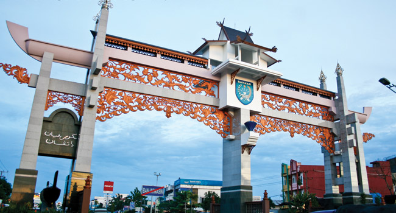

Sejarah
Tanggal 17 September 1945, Jepang menyerah kepada Sekutu (tentara Australia) yang memasuki Banjarmasin. Pada tanggal 1 Juli 1946, H. J. van Mook menerima daerah Borneo en de Groote-Oost dari tentara pendudukan Sekutu dan menyusun rencana pemerintahan federal melalui Konferensi Malino (16-22 Juli 1946) dan Konferensi Denpasar (7-24 Desember 1946) yang memutuskan pembentukan 4 negara bagian yaitu Jawa, Sumatra, Borneo (Netherlands Borneo) dan Timur Besar (Negara Indonesia Timur), namun pembentukan negara Borneo terhalang karena ditentang rakyat Banjarmasin. Pada tahun 1946, Banjarmasin sebagai ibu kota Daerah Banjar satuan kenegaraan sebagai daerah bagian dari Republik Indonesia Serikat. Kotapradja Banjarmasin termasuk ke dalam Daerah Banjar, meskipun demikian Daerah Banjar tidak boleh mencampuri hak-hak dan kewajiban rumah-tangga Kotapradja Banjarmasin dalam daerahnya sendiri.